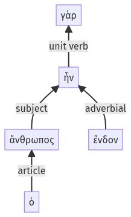

Lysias, Oration 1, 1.11.29-1.11.33a
1.11.1-1.11.28a | 1.12.1-1.12.4a
Sentence 23
1.11.29-1.11.33a
ὁ γὰρ ἄνθρωπος ἔνδον ἦν:
ὁ γὰρ ἄνθρωπος ἔνδον ἦν:
Highlighting:
- connecting words
- unit verb
- subject
- object
Color code:
- independent clause (level 1, linking verb)
